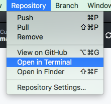

Making a Server
All our code so far has been client-side code. This means it is downloaded onto the user's computer, and makes things appear or happen on the user's computer.
If we want to do things outside of the user's computer – like post messages for other people to read on other computers – we need to run code on the server, the computer that the website comes from.
In this workshop we will set up a server using Node.js which will serve files to a client.
Setting up Node.js
Node.js (sometimes just called Node) is a server program.
Download Node (choose the 'Recommended For Most Users' option) and install it. (Basically just click 'next' on all the pages, you don't need to change any settings.)
Get our Node project
Go to this webpage where Matthew put a simple Node project.
Click 'Clone or download', then choose 'Open in desktop' to clone the project using Github Desktop.


This will create a clone (a copy) of the project on your computer. Keep a note of where on your computer it was created!
Terminal and Command Prompt
Have you heard of the 'command line?' It's a place in your computer where you type in commands, and it was very popular until Windows came out in 1992.
But the command line is still in your computer! It's been waiting for you all these years…
Find it on Windows

Press the Start button, type in "cmd" and Command Prompt will come up. Click on Command Prompt to start.
Find it on Mac
Open Finder, go to Applications, look in the Utilities folder and open 'Terminal'.
Change the color scheme
Black and white is so 90s. Change your color scheme:


Command line commands
The command line is a lot like Finder (on Mac) or Windows Explorer. You can move from folder to folder. You can run things in the folder you are in.
What folder am I in?
Windows: the Command Prompt always says what folder you are in.
Mac: To check where you are, type pwd and hit Enter. (It's short for 'print working directory'. 'Working Directory' means the folder you are in. Print means write on the screen, not on paper!)
What is in this folder?
Windows: type dir and hit Enter. (It's short for 'directory', which is the old word for folder.)
Mac: type ls and hit Enter. (It's kind of short for 'list files'.)
How do I go into a different folder?
Type cd something where 'something' is the name of the folder you want to move into. This lets you go down into folders inside the current working folder.
cd is short for 'change directory'. (Directory is the old word for 'folder'.)
Protip 1: If the folder name has a space in it, you need to put speech marks around the whole name. This is so the command line knows that the two words are joined together. For example: cd "My Documents"
Protip 2: On the Mac, capital letters matter! cd Downloads is not cd downloads. On Windows, capital letters don't matter and those both mean the same thing!
To go up to the parent folder, type cd .. (that is cd, a space, then two dots)
Back to NodeStart
Now, using your new Terminal or Command Prompt skills, change your working folder to be the nodestart folder that was just created.
You'll need to use lots of cd commands to get there.
Wait, where am I going?
You're going to the folder where you saved the project from GitHub.
You can find out by right-clicking on the project in GitHub Desktop, and choosing 'Open in Explorer' (Windows) or 'Open in Finder' (Mac). This will open Explorer or Finder in the right folder, so you can check where it is.
Once you get there, type dir (Windows) or ls (Mac) and you should see a list of files including index.js.
Protip: If you want to get to the right folder more quickly next time, just right click on the project name in Github Desktop and choose 'Open in Terminal' (mac) or 'Open in Git Shell' (windows)
This will open a Terminal or Command Prompt that is already in the right folder.
Running Node
So you should now have Terminal or Command Prompt open, and have moved to the nodestart folder.
To install the dependencies - all the things our program needs to work right - type npm install into Terminal\Command Prompt and hit enter. It may take a while to finish.
(How does it know what to install? It has a shopping list in the file package.json. Feel free to take a look. They're listed as 'dependencies'.)
Next, run our Node app by typing node index.js and hitting enter.
Your Terminal\Command Prompt is now busy running the server - it won't listen to any more instructions from you.
This starts up a server on your computer. Open your favourite web browser (we like Google Chrome) and go to http://localhost:3000/index.html to visit your local server.
If you see an orange and purple page, it's working!
URLs refresher
The link you just clicked has two parts:
- localhost:3000 is the server - the computer who we want to talk to.
- /index.html is the request - what we want it to give us.
What if I don't make a request?
Try this link: http://localhost:3000
If you don't say what you want, the server assumes you want index.html and gives you that.
Serving Files
This server program is very simple. When we ask for a file, it looks in the 'nodestart/public' folder for that file. If it's there, it sends the file to us.
The public folder is inside your nodestart folder. Use Windows Explorer or Finder (Mac) to look inside the public folder and see what's there.
Serve another File
Remember how we installed Atom for the Cat Facts activity? It's a text editor. Open Atom.
Atom works best when you open the folder you're working in. Click File (at the top left) then Open… and select the NodeStart folder, and open it.

This will give you a sidebar in Atom that shows all the files in NodeStart.

Use Atom to make a new file, and save it as in the 'nodestart/public' folder with the file name new.html.
Put this code inside new.html and save it again.
<!DOCTYPE html>
<html>
<head>
<meta charset='utf-8'>
</head>
<body>
Hi i am a new page I guess
not gonna brag
but i'm pretty cool
</body>
</html>
Now our server will automatically serve this page too, if we ask for it. Click this link to ask for the new page:
http://localhost:3000/new.html
What happens if you ask for something that's not in the public folder?
The server says "I can't GET that page for you".
Our server is clever
It's easy to serve pages that have already been made! But sites like Facebook, pinterest and TradeMe serve us special pages that are always changing – pages that update and change all the time.
Let's tell our server, when we make a special request, it should give us a special reply - not just a premade page.
The server's instructions
Use Atom to open index.js, a file in the in the main nodestart folder. Note that this is not in the public folder, it's in the folder above the public folder.
This is a js file, which means JavaScript. There are 5 lines of code, plus some comments (lines that start with // are comments for humans to read, the computer does not read them.)
Your code will look exactly the same as this:
//set up
var express = require('express')
var app = express();
//If a client asks for a file,
//look in the public folder. If it's there, give it to them.
app.use(express.static(__dirname + '/public'));
//listen for connections on port 3000
app.listen(3000);
console.log("I am listening...");
We don't need to understand all of those commands today. The main thing to know is, when you make a request, it looks in the public folder for a file to give you. If there is no matching file, it tells you it cannot GET that file.
Special requests
Add this code at line 8 of your index.js file:
var coolIdeas = [];
coolIdeas.push("Two cats who solve crimes in Dunedin");
var sendIdeasList = function (request, response) {
response.send(coolIdeas);
}
app.get('/ideas', sendIdeasList);
This tells the server: When someone makes a GET request for "/ideas", use the code in the fuction sendIdeasList to reply. That code sends them the list 'coolIdeas', which currently contains one item.
Now:
- Save your changes.
- Go to the Command Prompt\Terminal and hit Ctrl-C, Ctrl-C (twice) to stop the server.
- Then start the server again by typing
node index.js, Enter. - This will make the server read your updated instructions, and start serving with the new rules.
Now try this link again:
This time, you should get the special response.
protip: the response isn't very pretty! It's just a list on plain white background. This is because it's not really made for looking at.
Normally, a human wouldn't GET a list like this. Instead, the web browser would GET it behind the scenes, and use it to build something that looks nice.
GET and POST
When the user wants to look at a web page, that's called GET.
When the user wants to change or save something, like a new facebook message, that's called POST. They POST the message to the server, like a letter 📩
Delete ALL the code in index.js and replace it with this. I've changed it, so that the server lets clients add ideas to a list. (Remember lists from our TV Show Idea Generator?)
//set up
var express = require('express')
var app = express();
var bodyParser = require('body-parser')
//If a client asks for a file,
//look in the public folder. If it's there, give it to them.
app.use(express.static(__dirname + '/public'));
//this lets us read POST data
app.use(bodyParser.urlencoded({ extended: false }))
app.use(bodyParser.json())
//make an empty list of ideas
var coolIdeas = [];
coolIdeas.push("A family who are all secretly superheroes but haven't told each other");
//let a client GET the list of ideas
var sendIdeasList = function (request, response) {
response.send(coolIdeas);
}
app.get('/ideas', sendIdeasList);
//let a client POST new ideas
var saveNewIdea = function (request, response) {
console.log(request.body.idea); //write it on the command prompt so we can see
coolIdeas.push(request.body.idea); //save it in our list
response.send("thanks for your idea. Press back to add another");
}
app.post('/ideas', saveNewIdea);
//listen for connections on port 3000
app.listen(3000);
console.log("I am listening...");
Because we changed the server instructions, we need to:
- Save your changes.
- Go to the Command Prompt\Terminal and hit Ctrl-C, Ctrl-C (twice) to stop the server.
- Then start the server again by typing
node index.js, Enter.
You can test the GET by using the same link as before.
Testing POST is trickier because your web browser does not normally POST.
To post, we need a page with a button on it. Use Atom to make a new file called test.html and save it in your public folder. Put this code inside:
<!DOCTYPE html>
<html>
<head>
<meta charset='utf-8'>
</head>
<body>
<form method="post" action="/ideas">
<input type="text" name="idea" value="idea goes here">
<input type="submit" value="Submit">
</form>
</body>
</html>
Now if you go to that page (http://localhost:3000/test.html) and click Submit, your browser will POST your new idea to the server.
Try posting some new ideas, then look at http://localhost:3000/ideas again. The server will give you the list of ideas.
A pretty ideas feed
Let's add one more page to our site. This page will have some JavaScript that gets the ideas list, then makes it pretty for us to look at.
As before, use Atom to create the page, paste in the code below, and save it in the public folder as ideafeed.html
<!DOCTYPE html>
<html>
<head>
<meta charset='utf-8'>
<script src="//ajax.googleapis.com/ajax/libs/jquery/2.1.1/jquery.min.js"></script>
<title>Idea Feed</title>
<style>
/*This is the start of the CSS*/
.idea-box {
background-color: #FFF0A5;
padding: 20px;
}
h1 {
text-align: center;
color: #FFB03B;
}
h2 {
color: #468966;
margin: 10px;
padding: 10px;
border: 2px solid #FFB03B;
border-radius: 5px;
text-align: center;
}
/*end of CSS */
</style>
</head>
<body>
<h1 class="title">Idea Feed</h1>
<div class="idea-box">
</div>
<script>
//Hello! This is the start of the JavaScript.
var displayIdea = function(idea) {
var ideaElement = $('<h2>' + idea + '</h2>');
$(".idea-box").append(ideaElement);
}
var createFeed = function(data) {
data.forEach(displayIdea);
}
$.get("/ideas", createFeed);
//This is the end of the JavaScript.
</script>
</body>
</html>
Test your new ideas feed with this link: http://localhost:3000/ideafeed.html
The Idea Feed is a page with some JavaScript. The script will GET the raw ideas list, then go through each item in the list. For each item, it creates a little bit of HTML and adds it into the page. (Just like in the fivestar activity.)
That's all!
extra for experts: Can you move the code that POSTs new ideas onto the Ideas Feed page?